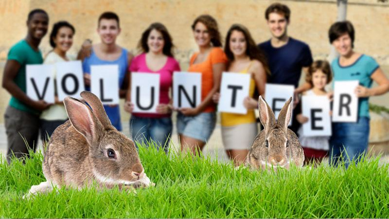
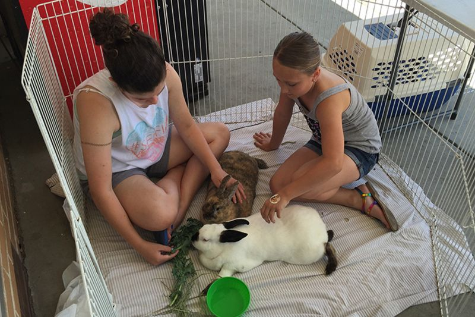

contact us
Contact Us
Requirements
part time: Must have the proper background checks. Must be gentle and kind to bunnies. Must be able to listen to instructions on how to feed and groom them or any other special needs. Must not be allergic.
full time: Must have the proper background checks. More intensive care of rabbits requires certified vet credentials or a college or university degree. Must have proper driver licensing for transporting goods and donations. Business and management degrees and experience would be welcome.
How To Help
10:00 AM - 1:00 PM, 5:00 PM - 8:00 PM
Volunteer At any location
Donate, Support, Host An Event
important Info
shelter@rabbit.com, 780-335-2319, Fax: 780-479-8946
Images for the Page 3
